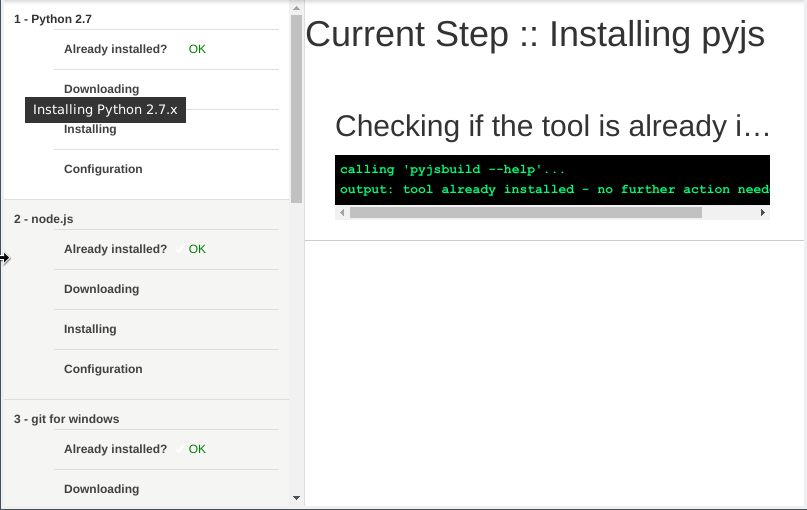

Welcome to the ViUR Control Tour
We have garthered some documentation and tips and tricks for you to be able to efficiently
use ViUR Control.
So let's start the Tour!
Dependency Wizard
For be able to use all of ViUR Controls features you should have installed following tools
and software.
- Python 2.7.x
- node.js
- git
- Google cloud SDK
- app-engine-python component for gcloud
- lessc
- pyjs
Feel free to install it by your own or use our installation wizard. We have to draft of that
tool linked in the Menu -> File -> Dependency Wizard

Settings
For ViUR Control it's necessary to make some configuration to work properly.
To open the settings window, please go in the global menu to File -> Settings or use the
global shortcut shown in the Menu.
The Projects Directory should point to your directory where all of your ViUR
projects are stored.
Usually you already have such a directory when you use an IDE like pyCharm, Atom etc.
Optionally you can point the Gcloud Tool Path to the custom directory of
google-cloud-sdk when not in your PATH.
Initials as part of version string is just a help to supplement automatic
version strings for deploying your ViUR instance later on.
Background Color and Foreground Color selects the
appropriate colors for terminals/ output windows when a task is running.
Some developers are more used to white text on dark background - other prefer the opposite
or even more eh colorful outputs ;)
You will find all configuration data in your users' config directory
Projects
Introduction
Projects are our basic resource we will work on. They are basically directories with one
or
more ViUR
subdirectories
inside.
You will have direct access to them on the left sidebar of the main window.
In the global settings you have to choose a directory, which will host all such project
directories.
The information a project defines includes the projects' directory name, its absolute
path,
port settings
for local development, etc
ViUR Control walks through your project directory and scans for valid ViUR projects,
which
basically
means to look for directories with an app.yaml file.
The list of projects will be stored in your user data directory as a json file called
"projects.json"
You can refresh/rescan your projects list calling the action in the File Menu.
directoryName
The directoryName is used as the displayed name in the project list
on
the left side of the main window
absolutePath
The absolutePath is used by local dev server and deployment
actions.
Local Server Port
The Local Server Port is the port this project is running on on the
local development server.
After starting your project, you can click on the »Open« button to open it in
your
preferred browser. e.g http://localhost:10000.
By default, the port numbers of Local Server Port and Local
Admin Port have a numeric gap of 5 e.g 10000 -> 10005.
Local Admin Port
The Local Admin Port is the port the management and inspection
console
is running on the local development server.
After starting your project, you can click on the »Server Console« button to open
it in your
preferred browser. e.g http://localhost:10000.
By default, the port numbers of Local Server Port and Local
Admin Port have a numeric gap of 5 e.g 10000 -> 10005.
Assigned Application-Ids
The Assigned Application-Ids table holds all unique project
identifiers
used by google. They are globally unique and are both used for running local
development
instances and also as
deployment targets to appengine.
When creating new projects you will get a default application id.
ViUR Control also fetches all applicationIds you are allowed to manage via the
following
command in a background task:
gcloud --format json projects list
and provides a dropdown menu element to add further ones to your
project.
Usable subdirectories
The entries in Usable subdirectories table represents relative
paths to
(sub-)directories inside your project where an app.yaml resides.
We consider it as best practice, if your project directory has a deploy or appengine
subdirectory inside with your deployable ViUR instance, but it's also ok the the
project
directory itself contains the deployable code with a app.yaml file.
e.g you have an directory named deploy where your production code lives.
But you also could have e.g a directory called 'download' where you fetched an
already
deployed version with the appcfg.py
tool to inspect the code which is running on gooogle appengine.
Credentials
The Credentials table holds combinations of username and password
by
applicationIds. This credentials are just used for local instances.
This table will be automatically filled by ViUR Control by parsing the output on
first
run for each new applicationId for this project.
Deployed Versions
That table will display all versions which are present on google appengine deployed
on
the google project referenced with the activated applicationId.
All versions by applicationId are globally cached in your config directory with a
timestamp.
The corresponding gcloud command:
gcloud --format json --project ${applicationId} app versions list
You can refresh this table as needed
Indexes
Google appengine uses for queries on indexed properties in kinds resources called indexes.
The description of these indexes are
generated when you use your development instances and are stored in a file called
index.yaml.
ViUR Control will check via git if you already have commited and pushed this file. That does
not mean the indexes are already up to date on your appengine project.
The corresponding gcloud command would be:
gcloud --project ${applicationId} app deploy index.yaml
Project Labels
In the console on insert link here, you can tag your projects with custom key,value pairs.
We tag our projects e.g with 'customer: name' or 'status: testing|production'
In the label settings you can select your prefered icons by label. Don't forget to save the shit!
You made it!
If you have questions or want to improve feel free to contact us or even better fork this
project at ... and make some pull requests.